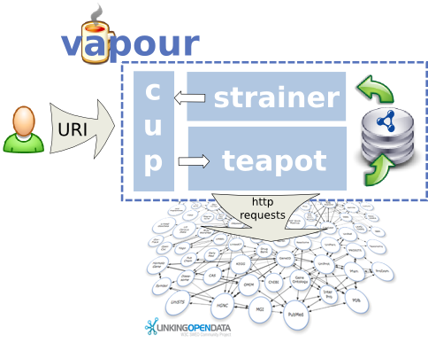

Vapour is a validation service to check whether semantic web data is correctly published according to the current best practices, as defined by the Linked Data principles, the Best Practice Recipes and the Cool URIs.
Vapour is available as a public web service, but also as open source software under the terms of the W3C License, so you can set up your own service or modify the source code in Python, if needed.
Public web service
Sample reports:
- A sample DBpedia resource: Asturias
- A sample Library of Congress Subject Heading: Science
- FOAF vocabulary
- SIOC vocabulary
Publications
Papers at workshops
- Diego Berrueta, Sergio Fernández and Iván Frade. Cooking HTTP content negotiation with Vapour. ESWC2008 workshop on Scripting for the Semantic Web (SFSW2008), Tenerife, Spain, June 2, 2008.
Talks
- Cooking HTTP content negotiation with Vapour. Talk presenting the paper with the same title published in the ESWC2008 workshop on Scripting for the Semantic Web (SFSW2008), Tenerife, Spain, June 2, 2008.
Development
Team
-
Diego Berrueta
(
 ), Fundación CTIC.
), Fundación CTIC.
-
Sergio Fernández
(), Fundación CTIC.
-
Iván Frade
().
-
Iván Minguez
(), Fundación CTIC.
-
Miguel García
(), Fundación CTIC.
Become involved
All the development material of the project (code, documentation, etc.) is stored in its svn repository in SourceForge. Don't hesitate to post comments to the development mailing list or to report bugs using the project's bug tracker.
History
Vapour was originally created to check the compliance of a web site against the recipes described in the Best Practices Recipes for Publishing RDF Vocabularies (W3C Working Draft), but later it was extended to be more generic to any kind of resources. This work is not endorsed by W3C.
High-level architecture
Vapour has the following high level architecture:

Vapour contains three modules:
- cup
- provides the web interface of the application
- teapot
- is the core of the application that launches HTTP dialogs, evaluates the responses and stores the results into the (in-memory) RDF store
- strainer
- generates the reports, both in XHTML and RDF/XML
References
- Project page at SourceForge
- Linked Data
- Semantic Web Deployment Working Group at W3C
- Best Practice Recipes for Publishing RDF Vocabularies (W3C Working Draft)
- Unit tests for Best Practice Recipes for Publishing RDF Vocabularies
- Cool URIs for the Semantic Web (W3C Interest Group Note)